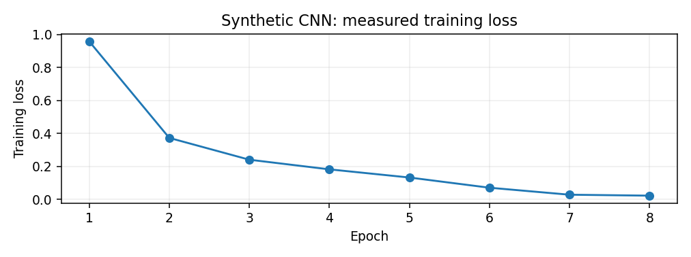

Course: COSC 2345 - Introduction to Artificial Intelligence
Application: conservation and potential anti-poaching support through thermal aerial object detection.
Report rebuilt locally: 2026-10-29 00:02
Status: Completed: synthetic CNN and BIRDSAI data preparation. In progress: real-image detector training.
The project designs and tests a custom convolutional neural network (CNN) to locate animals and people in infrared drone footage. A network learns visual representations from labeled images and predicts bounding boxes and classes. Research compares training from scratch, transfer learning, and YOLO11n. Hyperparameter search is a model-selection procedure and should not be confused with BFS or A* pathfinding.
| Date | Status | Milestone | Evidence / notes |
|---|---|---|---|
| 2026-10-28 | Complete | Custom CNN prototype | Implemented a 29,635-parameter CNN in Python/PyTorch. |
| 2026-10-28 | Complete | Synthetic training | Eight epochs; training loss 0.9574 to 0.0220; three objects detected in one synthetic demonstration. |
| 2026-10-28 | Complete | BIRDSAI dataset inspection | 32 source videos and 40,661 real frames identified; annotations matched to frames. |
| 2026-10-28 | Complete | Video-separated development export | 2,001 train images and 334 validation images; 26 train videos and 6 validation videos. |
| 2026-10-28 | Not started | Custom real-image training | Train a small anchor-free custom detector from random weights. |
| 2026-10-28 | Not started | Transfer-learning experiment | Compare custom detector with pretrained feature extraction. |
| 2026-10-28 | Not started | YOLO11n baseline | Fine-tune a pretrained object detector on the same split. |
| 2026-10-28 | Not started | Held-out evaluation | Compute class-specific precision/recall, mAP@.50, mAP@.50:.95, and FPS. |
- Original TrainReal: 32 sequences; 40,661 images; 74,668 animal annotations; 12,531 human annotations.
- Prepared development split: 26 train videos (2,001 images, 6,691 animal and 1,090 human labels); 6 validation videos (334 images, 954 animal and 62 human labels).
- Videos are split by sequence (not by adjacent image) to reduce data leakage.
- Official TestReal held out; not used for training or validation.
- The small validation sample has only 62 human labels: human recall will have high uncertainty.
- Custom trainable parameters: 29,635. Trained 8 epochs on synthetic shapes.
- Training loss: 0.9574 -> 0.0220.
- A single illustrated synthetic scene had 3/3 objects detected.
- This is not a real-footage precision, recall, mAP, or generalization result.
| Timestamp | Model | Mode | Epochs | Final train loss | Best val loss |
|---|---|---|---|---|---|
| - | Custom real-image model | Not yet run | - | - | - |

| Model | Training | Split | Precision | Recall | mAP@.50 | mAP@.50:.95 | FPS | Evidence |
|---|---|---|---|---|---|---|---|---|
| ThermalScout (real) | From scratch | Not yet evaluated | - | - | - | - | - | - |
| ThermalScout (real) | Transfer learning | Not yet evaluated | - | - | - | - | - | - |
| YOLO11n | Transfer learning | Not yet evaluated | - | - | - | - | - | - |
Interpretation: Lower training loss does not establish higher object-detection accuracy. Only enter precision, recall, mAP, and FPS after running the same evaluation protocol on an appropriate held-out split.
- Human annotations are less common than animal annotations.
- People are often only a few pixels wide; some objects are ambiguous.
- The first custom detector uses one prediction per grid cell and can miss crowded targets.
- Prototype output may show detection boxes before trustworthy benchmark metrics exist.
1. Run the packaged custom detector using python3.13 project_manager.py train --mode quick.
2. Inspect ground truth versus predictions and review the training/validation losses.
3. Run a larger scratch-training experiment and record its settings and limitations.
4. Implement a class-wise IoU-matched precision/recall/mAP evaluation before comparing models.
5. Train a controlled transfer-learning model and a YOLO11n baseline on the same data.
6. Report unbiased final metrics only after the official test set is evaluated.
COSC 2345 covers intelligent systems, search and heuristics, uncertainty, supervised learning, artificial neural networks, and responsible AI. This project emphasizes supervised learning and CNN-based perception, while using controlled model selection and evidence-based evaluation.
Run python3.13 project_manager.py update after each experiment or add milestones with python3.13 project_manager.py note --title "..." --detail "...". The files in this project folder update when you execute the command; nothing runs in the background.